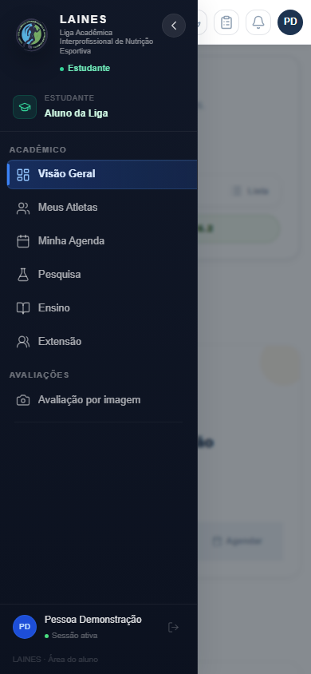
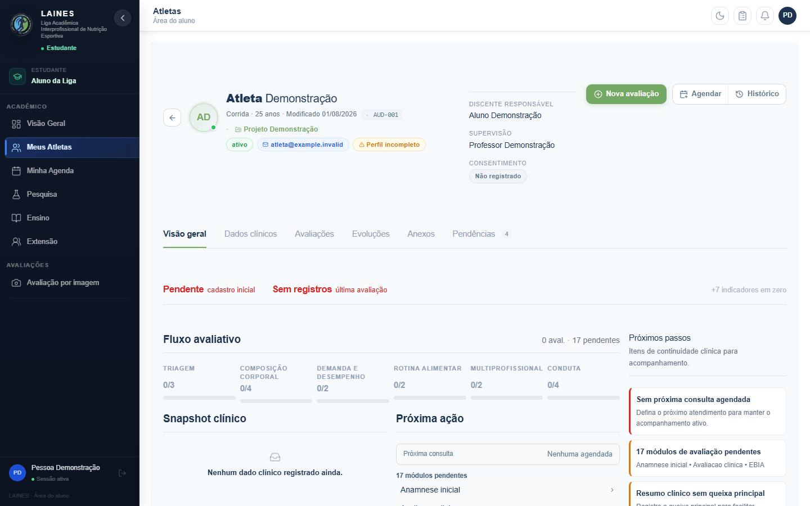
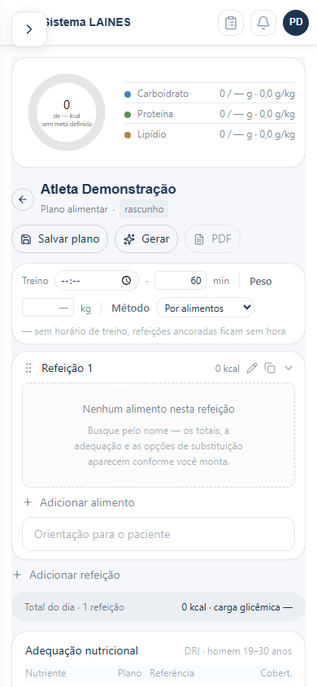
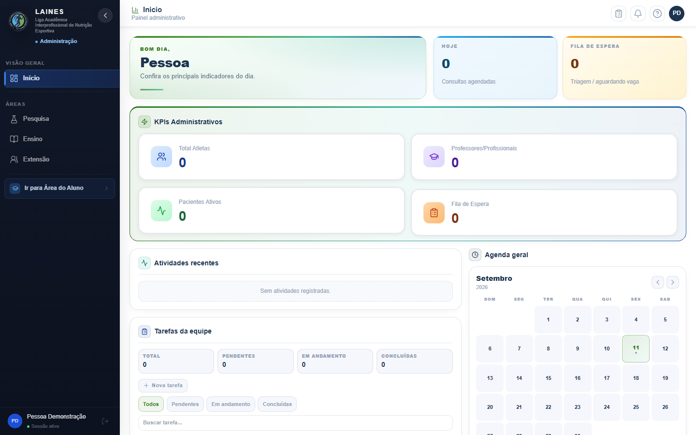
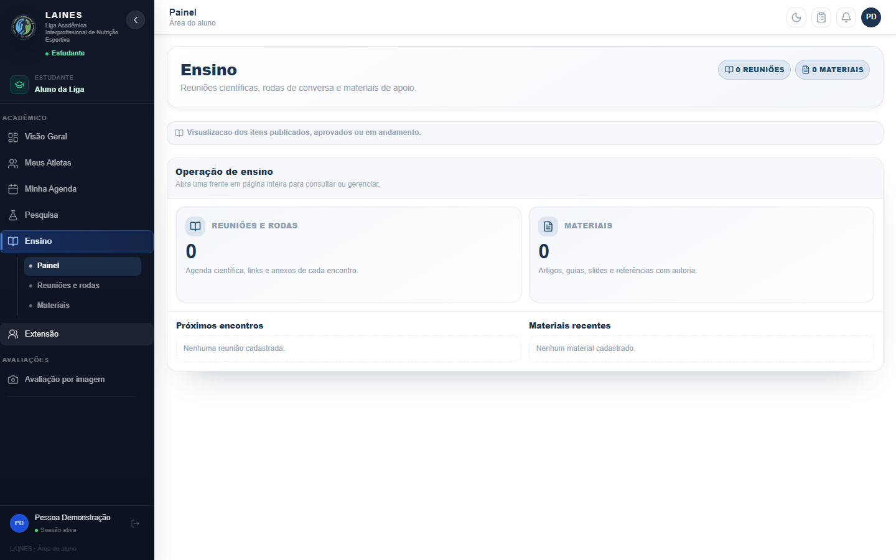
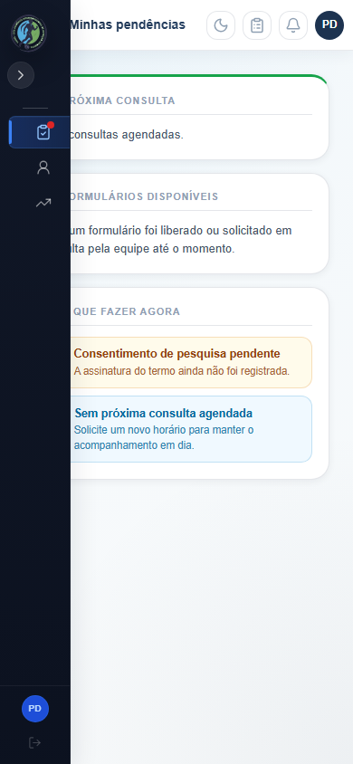

01 · IDENTIDADE
Recuperação sem desafio secreto
Dados cadastrais autorizam troca de senha; a listagem pode expor fatores e senha temporária. A combinação pode permitir tomada de conta.
O LAINES já tem os instrumentos necessários. A prioridade é proteger os dados, concluir as jornadas e tornar a informação mais fácil de usar.
Há falhas comprovadas em recuperação, autorização e prescrição. As correções precisam vir antes da publicação final.
A maioria das telas existe. O risco está também no que acontece entre tela, servidor, permissão e documento entregue.
Dados cadastrais autorizam troca de senha; a listagem pode expor fatores e senha temporária. A combinação pode permitir tomada de conta.
Salas por perfil recebem payloads clínicos. Exportações também precisam impor população e projeção no servidor.
Arquivo pode ser gravado antes da rejeição do ID. Inscrição pública pode alterar triagem existente usando só CPF.
Reprodução sintética confirmou contratos diferentes. Planos antigos, orientações, aprovação, PDF e entrega precisam ser consistentes.
CI contém YAML inválido; lint está vermelho. O npm sinaliza 10 pacotes no frontend e 16 na API, sujeitos à análise de aplicabilidade.
Menus cobrem conteúdo mobile, prontuário repete pendências e vínculo com diretoria muda a experiência principal do aluno.
Reorganizar os dados existentes. Participar da liga, gerenciar uma diretoria e atender um paciente são responsabilidades distintas.
Ensino, Pesquisa, Extensão e Comunicação: atividades publicadas, materiais, agenda e resultados visíveis aos integrantes.
Gestão interna apenas na própria atribuição.Agenda → paciente → avaliação → revisão → plano vigente → devolutiva ao atleta.
Acesso por vínculo e competência; mesma versão em tela e PDF.Contas, vínculos, solicitações e operação, para quem tem capacidade atribuída.
Cargo acadêmico não substitui autorização clínica.Prioridades e dependências, sem acrescentar novos cadastros clínicos.
Segurança, contrato de plano, autoria e CI. Corrigir os bloqueadores P0.
Prescrição, referências, revisão, PDF e portal do atleta funcionando juntos.
Navegação, prontuário, tabelas, gráficos, mobile e contexto de edição.
Jornadas integradas, documentação, migrations, storage e restauração comprovada.
P0 bloqueia publicação. P1 fecha a versão e as jornadas essenciais. P2 reduz dívida e melhora consistência. Abra cada entrega para ver o critério de aceite.
Trocar recuperação por desafio de uso único; retirar senhas temporárias de listagem/armazenamento reversível.
Pronto quando: Dados cadastrais não redefinem senha; desafio expira e não pode ser reutilizado; nenhuma resposta entrega senha.
Segmentar eventos pelo vínculo e desconectar sessões revogadas/expiradas.
Pronto quando: Duas equipes do mesmo papel não recebem eventos clínicos uma da outra; logout e retirada de vínculo interrompem entrega.
Impor escopo e projeção no servidor; neutralizar fórmulas em texto de CSV.
Pronto quando: Query string não amplia escopo nem remove anonimização obrigatória; CSV não executa conteúdo textual.
Validar ID/vínculo antes de gravar; conter caminhos e limpar falhas.
Pronto quando: Solicitação negada ou ID malformado grava zero arquivos; travessia codificada bloqueada.
Tornar inscrição pública idempotente e proteger alteração de triagem existente.
Pronto quando: CPF alheio não permite alterar nome, contato, histórico ou revelar inscrição existente.
Unificar schema versionado, cálculo e migração sem perda entre itens e alimentos.
Pronto quando: Mesmo plano salva/reabre/calcula/imprime com alimentos, orientações, alternativas e totais preservados.
Fixar autor/data/versão no servidor e autorizar transições de revisão.
Pronto quando: Cliente não forja signatário; aluno não publica como profissional; alteração posterior invalida aprovação.
Corrigir YAML duplicado e erros de lint relevantes; validar workflows.
Pronto quando: Workflow válido e execução completa em revisão imutável com credenciais/cenários obrigatórios.
Atualizar conjuntos compatíveis e analisar alcance de cada advisory.
Pronto quando: Relatório npm atualizado; avisos restantes têm análise de aplicabilidade; contratos críticos sem regressão.
Ligar PDF, revisão, ativação e plano vigente ao portal do atleta; resolver botão Gerar.
Pronto quando: Plano revisado chega ao atleta e PDF da mesma versão; nenhuma ação habilitada fica sem efeito.
Reutilizar anamnese e referência elegível; distinguir ausente/zero/meta/limite.
Pronto quando: Restrição existente afeta sugestão; DRI não é fixa por seed; rascunho não vira referência definitiva.
Consolidar papel, diretoria, capacidade e equipe assistencial por objeto/campo/canal.
Pronto quando: Leitura de outras diretorias funciona; rascunhos e orquestração internos não vazam; clínica só por vínculo.
Organizar Liga, Atendimento e Gestão com visão das quatro diretorias e área local de gestão.
Pronto quando: Aluno com/sem diretoria mantém rotina estável e conhece atividades publicadas de todas as diretorias.
Consolidar alertas e próxima ação; separar obrigatório, solicitado, opcional e não aplicável.
Pronto quando: Paciente novo não recebe indiscriminadamente 17 atrasos; identidade e ação principal ficam claras no topo.
Uniformizar datas, unidades, origem, cobertura, nulos e semântica das cores.
Pronto quando: Intervalos temporais reais; zero e desconhecido distintos; detalhes disponíveis por teclado/toque.
Corrigir drawer e sobreposição; revisar hierarquia, foco, contraste e alvos.
Pronto quando: Conteúdo utilizável em 320/390/768 px; menu fechado não cobre dados; jornadas essenciais por teclado.
Dar ao responsável fila de revisão com retorno ao registro e pendências contextualizadas.
Pronto quando: Revisor abre item, devolve ou aprova, e aluno enxerga o estado e a orientação no mesmo fluxo.
Persistir área/filtro/aba na navegação; reaproveitar dados existentes e proteger edição não salva.
Pronto quando: F5/voltar preservam contexto; perda de sessão não descarta silenciosamente edição; sem recadastro redundante.
Atualizar matriz, manual, contrato e inventário de release; destinar temporários e capturas.
Pronto quando: Uma fonte canônica por tema; release corresponde aos arquivos revisados; artefatos separados sem apagar evidência.
Adicionar round-trip de plano, API por objetos, arquivos e WebSocket entre duas equipes.
Pronto quando: Testes falham para os defeitos reproduzidos nesta auditoria e passam após a correção, sem skips obrigatórios.
Validar implantação conjunta, migrations, TLS, storage e backup/restore em ambiente equivalente.
Pronto quando: Restaurar banco e arquivos e executar jornadas após rollback; registrar versões, resultado e limitações.
Verificar captura-processamento-retomada e explicitar qualidade/limite do resultado.
Pronto quando: Estimativa não se confunde com medida validada; imagens só por vínculo; falhas e retomadas têm estado consistente.
Medir build por jornada e testar atualização/cache durante atendimento.
Pronto quando: Sem cache clínico em configurações suportadas; atualização não perde trabalho; orçamento de rede medido.
Reduzir CSS acumulado e componentes grandes por área; simplificar dashboards/relatórios.
Pronto quando: Mesmos controles de lista/estado/ação; menos duplicação e leitura orientada à decisão, com comparação visual.
Frontend real, API interceptada e dados fictícios. Capturas são evidência de interface; não comprovam autorização ou integração com produção. Clique para abrir a imagem.

O drawer cobre a página ao entrar como aluno.

Cabeçalho extenso e várias representações das mesmas pendências.

O gráfico aparece antes do paciente e das ações.

Vínculo de diretoria muda a entrada para o painel administrativo.

Leitura comum já existe; ações e informação precisam de hierarquia.

A barra lateral ainda encobre parte do texto.
Revisão do código local, testes de núcleo, provas isoladas e inspeção visual. Não houve exploração de produção, acesso a dados reais de pacientes ou alteração das regras do produto.
Antes da publicação: validar correções em homologação, autorização entre equipes, câmera/processador real, acessibilidade completa, configuração ativa e restauração de banco e arquivos. A skill de SaaS para saúde não estava instalada; referências oficiais e contexto do projeto estão documentados.
Fotografia do estado local em 11/09/2026. Os testes e as propostas têm limites explícitos nos documentos. A auditoria não é uma aprovação de produção.